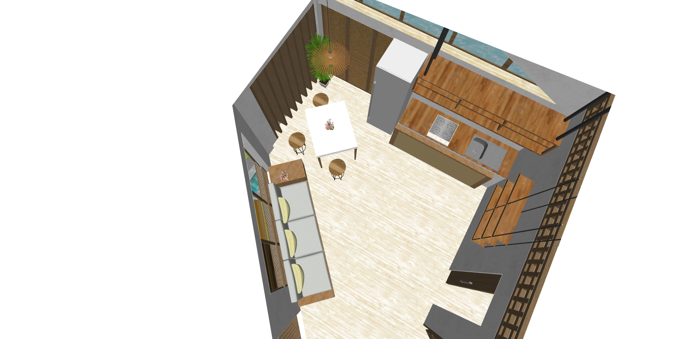

context
group residential project with
Samantha Go & Meirah Magsino
/tropical design
software
AutoCAD
SketchUp
ArchiCAD
Lumion 8
Adobe Photoshop
date
2018
about the project
The anyo tropical house focuses on tropical design elements and the transformability of space.
With the small lot area and the sloping lot, the design of the house incorporates transformable spaces where the function of a specific space can change through flexible furniture and fixtures which will cater to the client-users.
the client
The design of the house specifically addresses the needs and condition of the client. The client for this project is a 70-year old couple who values their free time which they use for their hobbies and spend time
with their family. Wood crafting and plant/vegetable tending are part of their daily activities.
➜left and right elevations perspectives
design considerations
With the client profile, these elements are highlighted to be considered in the design process.
➜strategy diagrams
change in disposition
redefine traditional residential concepts
adapt to the needs of the users
physical modification through change in position, shape, structure, and function
➜change in disposition principle
principle application
With the use of this principle, new design concepts can be applied which can redefine and replace traditional ones. This simple principle is perfectly fit for the situation and context of the client and also gives
opportunity to design better within a small area.
This principle is specifically applied in important spaces which can be utilized for multiple functions. These spaces are the foyer-dining area, work studio-exhibit space area, living-dining-kitchen area,
and patio-family room area. These spaces will serve for multiple functions due to the need for space-saving techniques and also for the accessibility of the retired couple.
➜on entry
On entry, users will be greeted by growing vegetation on the ground and at the shading panels. The operable panels, which are maintained by the wife, serve as shading and support frame for crawling vegetation.
➜dining-foyer configuration
Moving inside, the users will be greeted by the pocket foyer which can also serve as a mini dining area for the couple. This is also where their bedroom is situated.
➜work studio-exhibit configuration
The next space is the work studio of the retired craftsman where he can continue doing work or choose to transform this space into an exhibit area.
➜view from balcony area
The balcony area serves as the buffer space for the house's "split" in massing. The aforementioned spaces were specifically for the couple-clients' use while the next spaces to be mentioned are for the other users.


➜living / dining / kitchen area configuration
The living area can transform into a kitchen and dining area depending on the situation. This is usually used when the couple has visitors (family, relatives, exhibit viewers, etc.).
➜longitudinal section
As the clients are already at their retirement age, the design specifically addressed the minimal change in elevation to avoid many steps especially for the areas they will often use.
➜patio / family room configuration
This last space will be mostly used by their family who do not live with them. This can serve as a family activity room, a patio, or a resting area with a suitcase toilet and bath.